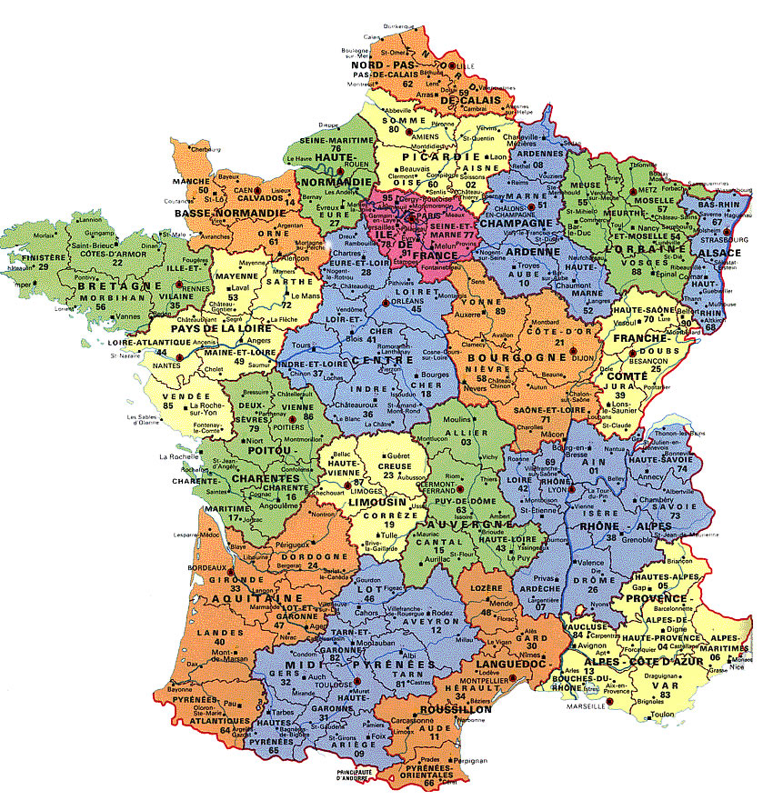
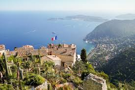
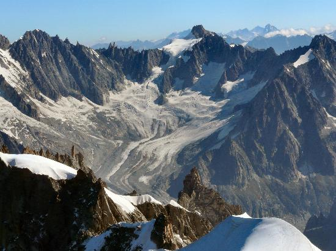

Geografia Franției
Poziția pe glob
Franța este situată în Europa de Vest. Se învecinează cu Belgia, Luxemburg, Germania, Elveția, Italia, Spania și Andorra. Este spălat de Oceanul Atlantic și Marea Mediterană.
Coasta de Azur
Coasta de Azur, situată în sud-estul Franței, este o destinație de lux renumită pentru plajele sale spectaculoase, stațiunile elegante precum Nisa, Cannes și Monaco, precum și pentru clima sa mediteraneană plăcută.
Alpi
Munții Alpi sunt cel mai înalt lanț muntos din Europa, întinzându-se prin opt țări și fiind renumiți pentru peisajele spectaculoase, stațiunile de schi și biodiversitatea lor.